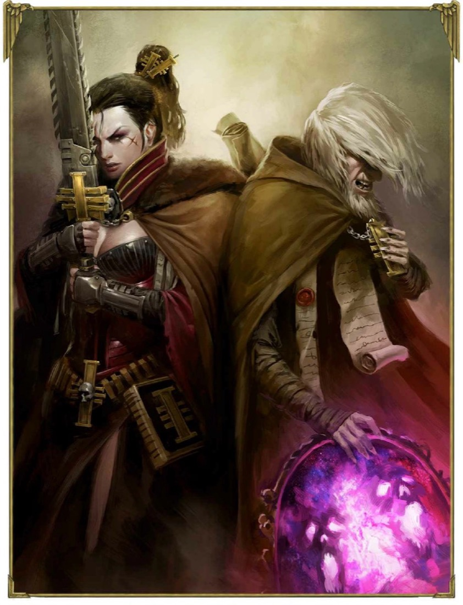

Inquisition
| Inquisition Holy Orders of the Emperor's Inquisition | |
|---|---|
| Secret police and intelligence service | |
Seal of the Inquisition Artwork © Games Workshop | |
| Overview | |
| Established | Final years of the Horus Heresy, by tradition[a] |
| State | Imperium of Mankind |
| Seat | None; chief concentrations on Terra |
| Founder | Malcador the Sigillite, at the Emperor's order |
| Authority | The Emperor, and the High Lords of Terra, in theory |
| Representation | Inquisitorial Representative among the High Lords Kleopatra Arx (c. 999.M41) |
| Symbol | The Inquisitorial Seal, a stylised pillar derived from the sigil of Malcador |
| Ordos Majoris | |
| Ordo Malleus | Daemons and the Warp Chamber Militant: Grey Knights |
| Ordo Xenos | Alien threats Chamber Militant: Deathwatch |
| Ordo Hereticus | Heresy within Mankind Chamber Militant: Adepta Sororitas |
| Ordo Malleus Ordo Xenos Ordo Hereticus | |
The Inquisition, formally the Holy Orders of the Emperor's Inquisition, is a secret organisation that stands outside the ordinary structure of the Imperium of Mankind. It serves as the Imperium's secret police and chief intelligence service, and its purpose is to hunt out and destroy every threat to the survival of humanity: the corruption of Chaos, Heretics and mutants, rebels, and the many alien species that assail the Imperium. Its servants, the Inquisitors, answer to no one but one another, and in theory to the Emperor of Mankind and the High Lords of Terra.[1][2]
The Inquisition was founded at the Emperor's command by Malcador the Sigillite during the final days of the Horus Heresy. It has no formal hierarchy and no headquarters. Its Inquisitors carry an authority that can override that of any other servant of the Imperium, and they may requisition any resource, from a single clerk to a battlefleet or a Space Marine Chapter, or order the destruction of an entire world by Exterminatus. In practice their power is tempered by rivalry, by their dependence on the cooperation of the other great adepta, and by the secrecy that surrounds them.[1]
The Inquisition is divided into three great orders, the Ordo Malleus, the Ordo Xenos and the Ordo Hereticus, and many lesser ones. It is divided also by philosophy: the Puritans, who guard the Imperium as it is, and the Radicals, who will use the tools of the enemy if it brings victory. Few Imperial citizens have seen an Inquisitor. Fewer who have done so wish to meet one again.[2]
History
[edit]Origins
[edit]The origins of the Inquisition are obscure even to Inquisitors. Records have been sealed, destroyed or deliberately falsified, and the Ordo Originatus, which investigates the Imperium's own history, is opposed in its work by the Ordo Redactus, whose task is to obscure it. The newest evidence, recovered after the Siege of Terra and gathered by the Logos Historica Verita, favours the following account.[3][2]
At the outbreak of the Heresy the Emperor ordered his Regent, Malcador, to gather men and women of unswerving loyalty and an "inquisitive nature" who could seek out the hidden enemies of mankind. Malcador's agents included the Knights-Errant, a company of Space Marines who had either remained loyal in the Legions or had escaped their traitor Legions after the massacre at Isstvan III. Shortly before the Siege of Terra he presented twelve individuals to the Emperor in the Palace. Four were mortal administrators and eight were Knights-Errant. The mortals became the first Inquisitors, and the eight Space Marines became the first of the Grey Knights, the Chamber Militant of the Ordo Malleus.[3] The Inquisitorial Seal derives from Malcador's own sigil.
An older tradition, still current among Inquisitors, tells that four trusted mortal servants of the Emperor met in the aftermath of the Heresy to discuss what should be done now that the Emperor was interred. Two believed that the Imperium could not survive without the Emperor and left Terra to find a way to bring him back. The other two stayed to establish themselves with the new Senatorum Imperialis and, with the support of the surviving loyalist primarchs, to oppose the efforts of the first pair. The resurrectionists, called Promeus and Moriana, are said to have drawn the cults that were beginning to worship the Emperor into their following and then to have fallen out with each other. Their quarrel is remembered in the sect of the Promeans, who were eventually reconciled to the Inquisition.[2] The Ordo Originatus classes it as a legend of the early resurrectionist philosophies.
It is generally accepted that the Inquisition took its present form in the middle of the 32nd millennium, after the formal birth of the Imperial Cult as the state religion, though most of its elements had existed since the Great Crusade, including the Black Ships and the Sisters of Silence who served as the Emperor's hunters of the witch.[1]
The Ordos
[edit]The Inquisition began as a single body whose sole purpose was to combat Chaos. After the War of the Beast and the near destruction of Terra by the Orks, it divided, in the 32nd millennium, and the Ordo Xenos was formed to defend mankind against alien species, while the original body became the Ordo Malleus. The Ordo Xenos received the Deathwatch, an alliance of Space Marines from many Chapters first raised to fight the Orks, as its Chamber Militant.[3] After the horrors of the Age of Apostasy in the 36th millennium, a third order, the Ordo Hereticus, was created to prevent another Reign of Blood and another Plague of Unbelief. It was given the Orders Militant of the Adepta Sororitas as its Chamber Militant, and it also monitors the Ecclesiarchy itself.[4]
Era Indomitus
[edit]The opening of the Great Rift at the end of the 41st millennium changed some of the Inquisition's habits. Because daemonic incursions were by then so common, the policy of keeping Space Marines ignorant of the existence of daemons was relaxed, and the knowledge of daemons among the Adeptus Astartes was no longer suppressed. A new minor order, the Ordo Maledictum, was founded to seek any means by which the Rift might be driven back or closed. The Logos Historica Verita, founded by Roboute Guilliman, has since made the Ordo Originatus's task easier, and it is regarded with some alarm by the Ordo Redactus.[5][3]
Organisation
[edit]Absence of hierarchy
[edit]The Inquisition has no formal structure and no ranks. Authority within it rests on reputation and influence, and seniority proves nothing, although most Inquisitors defer to older and more experienced peers. A higher tier, called Inquisitor Lords, Lord Inquisitors or High Inquisitors, exists to maintain the integrity of the whole. Promotion to it is by invitation: a candidate must be nominated by an existing Lord and approved by two others. An Inquisitor Lord has no territory and no subordinates by right, but may recognise new Inquisitors, call High Conclaves and requisition larger resources.[2]
Conclaves, cells and cabals
[edit]An Inquisitor's work is solitary, and many never meet another of their kind. Where the Imperium is thin, isolated branches have had no contact with Terra for centuries and have developed their own beliefs. Inquisitors do assemble in conclaves, formal gatherings that may last a few days or, as High Conclaves, several weeks. Smaller, informal cells of cooperating Inquisitors form around a shared goal or a particular enemy and may lie dormant for decades. Wider cabals unite Inquisitors of a common outlook against a threat in a region.[2]
Recruitment and retinues
[edit]Recruitment is not centralised. Each Inquisitor may choose and invest a successor, and the criteria are intelligence, loyalty and unflinching principle. A novice is called an Interrogator and serves in the Inquisitor's retinue, which includes acolytes, servitors and a wide range of specialists, until the master and, usually, three Inquisitors or a Lord approve full investiture.[2]
Inquisitorial Representative
[edit]The Inquisition's one formal office is that of the Inquisitorial Representative, who sits among the High Lords of Terra. The Representative is chosen from the Inquisitor Lords of the sectors around Terra, and the role may be shared. A Representative may serve no more than five standard years. The Representative speaks for the Inquisition as a whole, warns the High Lords of emerging threats and builds support for the Inquisition's aims.[2] In the Indomitus Crusade the seat was held by Kleopatra Arx.[5]
Ordos Majoris

Ordo Malleus ("the Daemonhunters")
[edit]The Ordo Malleus defends the soul of mankind against daemons and the enemies from the Warp. Its Inquisitors are often hardened warriors, because daemons can be driven out only by blessed blade and purifying flame, but knowledge of daemonic lore is their chief weapon.[6]
The Chamber Militant of the order is the Grey Knights, designated the 666th Chapter, who exist solely to destroy daemons. Its stigma is Extremis Diabolis.[6][7]
Ordo Xenos ("the Alien Hunters")
[edit]The Ordo Xenos studies, catalogues and destroys the xenos. Its Inquisitors are the most eccentric, spending years in non-human space, and many have ties with Rogue Traders and alien informants. By general repute there is more blood on their hands than on those of any other order.[6]
Its Chamber Militant is the Deathwatch, veteran Space Marines drawn from many Chapters. Its stigma is Xenos Horrificus.[6][7]
Ordo Hereticus ("the Witch Hunters")
[edit]The Ordo Hereticus hunts the traitors, mutants, rogue psykers and heretics within humanity, the enemy within. Its Inquisitors monitor the Ecclesiarchy, ensuring that the Wars of Faith do not exceed their mandate and that cardinals do not gather too much power.[6]
Its Chamber Militant is the Orders Militant of the Adepta Sororitas. Its stigma is Hereticus Abomini.[6][7]
Ordos Minoris
[edit]There are also many lesser ordos, each concerned with a particular threat. They are nominally of equal rank but seldom have the resources of the great three. Many are unknown even to other Inquisitors. Recorded examples include the Ordo Machinum, which watches the Adeptus Mechanicus; the Ordo Originatus and Ordo Redactus, which study and obscure the past; the Ordo Maledictum, which works against the Great Rift; and the defunct Ordo Chronos, which studied time and the Warp, and the Ordo Hydra, whose extremist plot was broken by Inquisitor Jaq Draco.[2][5]
Powers and practice
[edit]Authority
[edit]The Inquisition's remit places it above every institution of the Imperium except the High Lords themselves. An Inquisitor may demand service from any Imperial citizen, from a scribe to a High Lord, and has absolute power to judge and execute heretics, mutants and rogue psykers with no appeal except through another Inquisitor. All verdicts are in effect sentences of death, though they may take different forms. Heretics who may be redeemed are sometimes assigned to service in the armies, made into arco-flagellants or sent to Terra to become fuel for the Golden Throne and the Astronomican. An Inquisitor who cannot reach an enemy may declare it Excommunicate Traitoris, which strips it of all rights and marks it as a target for any loyal subject. The Inquisition may also order an Edict of Obliteration, which wipes out all records of the person or organisation concerned.[1][2]
The weapon of last resort is Exterminatus, the destruction of all life on a world. It is reserved for outbreaks of Chaos or Genestealer infestation that threaten to spread. The Inquisition holds that it is better to lose countless loyal subjects than to allow a single heretic to escape and endanger others.[2]
Insignia
[edit]Each Inquisitor carries a Seal, a small amulet shaped like a column and derived from Malcador's sigil. To show it is to demand obedience, and a governor who sees it can expect to lose the resources of his world to its bearer. Inquisitors often wear a rosette as a mark of their office as well.[2]
Limits
[edit]The Inquisition's reach is much less certain in practice than in theory. Inquisitors are essentially "peers of the Imperium", sharing influence with governors, generals, Chapter Masters, Rogue Traders, admirals, Arbites judges and sector representatives of the Administratum. An Inquisitor who tries to arrest a planetary governor on a world close to rebellion may find the whole population rising against him. One who declares a world purged without the agreement of his peers may be ostracised, and one who strikes a powerful heretic sponsored by a rival may become a target himself. The Inquisition is not immune to the rivalries that govern the rest of the Imperium.[2]
Factions
[edit]
Inquisitors share a single aim and differ widely in how they pursue it. All, it is said, start as Puritans and end as Radicals, though Puritans hold that the extremes of Radicalism are the corruption of those who handle power and forbidden knowledge. The main factions include:[2]
| Faction | Type | Doctrine |
|---|---|---|
| Amalathians | Puritan | Unity among the Imperium's institutions and no violent change. The largest sect in the Inquisition, and the one most opposed to factionalism. |
| Monodominants | Puritan | The oldest Puritan faction, dating to the 33rd millennium. It demands the destruction of all non-humans and of mutants and psykers in the end, and is quick to order Exterminatus. |
| Thorians | Puritan | Born of the Age of Apostasy and named for Sebastian Thor. They believe that the Emperor's avatar will appear in time of need. |
| Xanthites | Radical | The most powerful Radical grouping, named for Inquisitor-Master Zaranchek Xanthus, executed as a heretic in the 32nd millennium. They use Warp-based weapons, such as daemon-possessed swords and daemonhosts, against Chaos. Open Xanthites are denied the service of the Grey Knights. |
| Horusians | Radical | A Xanthite offshoot that wishes to harness Chaos to create a leader for humanity. Even other Radicals regard it as dangerous. |
| Recongregators | Radical | Believe that the Imperium is stagnant and that only change can save it, and work in secret to bring change about. |
| Istvaanians | Radical | Named for the massacre of Isstvan III. The most extreme: they would break the Imperium that they serve to remake it. |
Relations with other institutions
[edit]Inquisitors show some discretion toward the Chapters, which will fight for their Emperor-granted autonomy, but are not exempt from Inquisitorial scrutiny. Whole Chapters have been declared Excommunicate Traitoris and hunted by the Grey Knights or the Sisters of Battle.[7]
The Mechanicus is protected by the Treaty of Olympus, but many within the Inquisition believe that it walks a fine line between duty and damnation. A long, secret war of purge-programs has been fought between the Inquisition and the Cult Mechanicus over the control of records.[8][9]
The Ordo Hereticus oversees the Ecclesiarchy. The Ordo Hereticus was created after the Reign of Blood to prevent another.[4][7]
The main resource that the Administratum controls, and that the Inquisition often requires, is information. The Inquisitorial Rosette is meant to cut through the Administratum's red tape, though many officious scribes treat it as an annoyance. At times entire divisions have been accused of inefficiency on such a scale that a Puritan Inquisitor has executed many thousands of bureaucrats.[10]
Timeline
[edit]| Date | Event |
|---|---|
| c. 013–014.M31[b] | Before the Siege of Terra, Malcador the Sigillite presents twelve chosen individuals to the Emperor. The four mortals become the first Inquisitors, and the Knights-Errant become the first Grey Knights. |
| 021.M31 | The Grey Knights are entered in the records as the 666th Chapter, and the Inquisitor Lords agree a pact with Janus, the first Supreme Grand Master. |
| 544–546.M32 | During the War of the Beast, the Inquisition's single office cannot use the Grey Knights properly. The Inquisitorial Representative attends the first full roll of the High Lords of Terra. |
| c. 550.M32[c] | The Inquisition takes its present form, after the formal birth of the Imperial Cult as the state religion. |
| c. 551.M32[d] | The Inquisition divides into the Ordo Xenos and the Ordo Malleus. The Ordo Xenos receives the Deathwatch as its Chamber Militant. |
| M36 | During the Age of Apostasy, Goge Vandire seizes both the Administratum and the Ecclesiarchy. |
| c. 380.M36[e] | The Ordo Hereticus is created to prevent another Reign of Blood, and the senior Sisters sign the Convocation of Nephilim with it. |
| 999.M41 | The opening of the Great Rift leads the Inquisition to relax its policy of keeping the Space Marines ignorant of daemons. |
| 999.M41 | Kleopatra Arx holds the seat of the Inquisitorial Representative among the High Lords. |
| c. 000.M42[f] | The Ordo Maledictum is founded to seek a means of driving back or closing the Great Rift. |
| c. 012.M42[g] | The Logos Historica Verita, founded by Roboute Guilliman, takes up the work of the Ordo Originatus in recovering the past. |
See also
[edit]Notes
[edit]- ^ Sources disagree on the Inquisition's beginnings. The Ordo Originatus, which exists to settle the question, and the Ordo Redactus, which exists to obscure it, are said to have reached opposite conclusions.
- ^ Estimated; no record gives an exact year.
- ^ Estimated; no record gives an exact year. The Inquisition is dated only to the middle of the 32nd millennium.
- ^ Estimated; no record gives an exact year.
- ^ Estimated; no record gives an exact year.
- ^ Estimated; no record gives an exact year.
- ^ Estimated; no record gives an exact year.
References
[edit]- ^ a b c d Warhammer 40,000: Core Book (9th Edition), pg. 60 (Quote). Games Workshop. Codex: Adeptus Custodes (8th Edition), pg. 7. Games Workshop.
- ^ a b c d e f g h i j k l m n Haley, Guy. Avenging Son (novel). Black Library. Gaunt's Ghosts: The Founding (Omnibus Novel), "First and Only" (novel) by Dan Abnett.
- ^ a b c d Swallow, James. The Flight of the Eisenstein (novel). Black Library. Sanders, Rob. Atlas Infernal (novel). Black Library.
- ^ a b Mitchell, Sandy. Cain's Last Stand (novel). Black Library. Mitchell, Sandy. Caves of Ice (novel). Black Library.
- ^ a b c Walker, Kev. Daemonifuge (Graphic Novel). Black Library. Goto, C.S.. Dawn of War (novel). Black Library.
- ^ a b c d e f Dark Heresy: Core Rulebook (RPG). Fantasy Flight Games.
- ^ a b c d e "Inquisition". Warhammer 40k Wiki (Fandom).
- ^ Mitchell, Sandy. Death or Glory (novel). Black Library. Mitchell, Sandy. Duty Calls (novel). Black Library.
- ^ "Adeptus Mechanicus". Warhammer 40k Wiki (Fandom).
- ^ "Administratum". Warhammer 40k Wiki (Fandom).